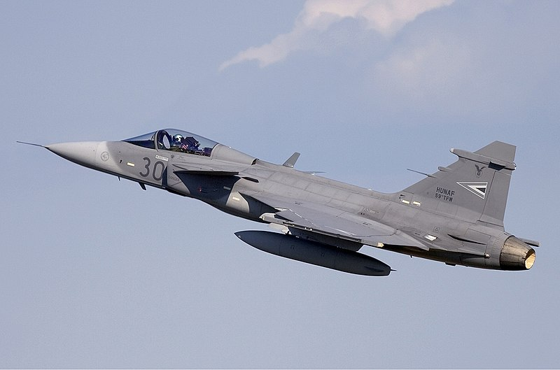
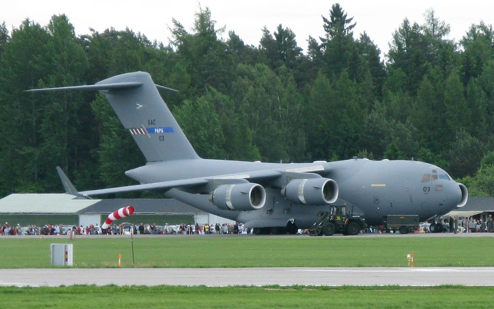

Top 3 Repülőgép
| Repülőgép | Típus | Származás | Leírás | Képek | |
|---|---|---|---|---|---|
| 1. | JAS-39 Gripen | Többfunkciós vadászrepülőgép | Svédország | A JAS-39 Gripen modern, negyedik generációs vadászgép, amelyet a légvédelem, légi fölény megszerzése, és földi célok elleni támadások érdekében használnak. Kiváló manőverezőképességének és fejlett avionikájának köszönhetően hatékonyan alkalmazható különböző harci helyzetekben. |  |
| 2. | Antonov An-26 | Kétmotoros katonai szállító repülőgép | Szovjetunió | Az An-26 a Magyar Honvédség szállító kapacitásának gerincét képezi. Kiválóan alkalmas csapatok, felszerelések és különféle áruk szállítására, valamint humanitárius és katasztrófaelhárítási feladatokra is. |  |
| 3. | C-17 Globemaster III | Nagy hatótávolságú, nehéz katonai szállító repülőgép | Egyesült Államok | Bár Magyarország nem rendelkezik saját C-17 repülőgépekkel, a Magyar Honvédség aktív résztvevője a NATO Stratotlift programjának, amely biztosítja a C-17 Globemaster III repülőgép ek hozzáférését. Ezek a repülőgépek kulcsfontosságúak a nagyméretű felszerelések és csapatok gyors és hatékony szállításában nagy távolságokra, beleértve a nemzetközi küldetéseket is. |  |
Ezek a repülőgépek kiemelkedő fontossággal bírnak a Magyar Honvédség számára, mivel biztosítják a hatékony légi védelmet és a különböző katonai műveletek támogatását.